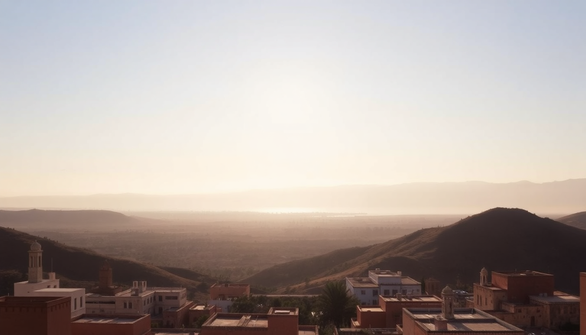

Best Cities to Visit in Morocco: Marrakech, Fes & Chefchaouen

I landed in Marrakech at midnight, got lost in the medina within ten minutes, and had my first glass of sweet mint tea at a rooftop cafe overlooking Jemaa el-Fnaa. That set the tone for the rest of the trip: chaotic, beautiful, and never boring. Over two weeks, I hit Marrakech, Fes, and Chefchaouen—three cities that couldn't be more different. Here's what I learned, what I'd do again, and what I'd skip.
Why visit Marrakech first?
Marrakech is the loudest, most intense introduction to Morocco. It's also the easiest to fly into, with direct flights from most European hubs. The medina is a maze of souks, snake charmers, and juice stalls, but it's not for everyone. I loved it; my travel partner found it exhausting by day three.
Key spots in Marrakech:
- Jemaa el-Fnaa — the main square. Go at sunset for the food stalls, but skip the monkey handlers. The grilled lamb skewers from stall #14 are legit.
- Bahia Palace — worth the 70 MAD entry. The tilework is quieter than the crowds suggest. Go early (9 AM) to avoid tour groups.
- Le Jardin Secret — a calm escape from the medina. The rooftop cafe serves a decent tagine, and the garden is a good place to sit and decompress.
- Riad Kniza — where I stayed. It's a restored 18th-century riad in the medina, with a plunge pool and a hammam. The staff walked me to the main square my first night so I wouldn't get lost.
If you only have one day in Marrakech, skip the Majorelle Garden (overpriced, crowded) and spend time in the souks instead. Haggle hard—start at half the asking price.
When is the best time to visit Fes?
Fes is hotter, older, and more conservative than Marrakech. I visited in late October, and the temperature was perfect—mid-70s during the day, cool at night. Summer (June-August) is brutal: 100+°F and no air conditioning in most riads. Winter (December-February) is chilly but manageable, with fewer tourists.
What I did in Fes:
- Fes el-Bali — the old medina, a UNESCO site. It's a labyrinth with 9,000 streets. I hired a guide for the first day (150 MAD for 3 hours) and went solo the second. Do not skip the Chouara Tannery — the smell is strong, but the view from the leather shops above is unforgettable. Buy a leather wallet there; it's cheaper than Marrakech.
- Al-Attarine Madrasa — 20 MAD entry. The zellij tilework is the best I saw in Morocco. Quiet in the late afternoon.
- Riad Fes Maya — a small riad with a rooftop terrace overlooking the medina. The owner made me breakfast every morning: fresh bread, olive oil, honey, and mint tea. Book direct for a better rate.
- Cafe Clock — a popular spot for camel burgers and live music. I went for the storytelling night on Thursday. It's touristy but fun.
Fes is less scam-heavy than Marrakech, but watch out for "free guides" who lead you to carpet shops. Politely say la shukran (no thank you) and keep walking.
Is Chefchaouen worth the detour?
Chefchaouen, the Blue City, is Instagram bait—but it's also genuinely charming. The blue-washed streets are photogenic, but the real draw is the relaxed vibe. It's smaller, quieter, and far less commercial than Marrakech or Fes. I spent two nights there and wish I'd stayed three.
Getting to Chefchaouen:
- From Fes, take a CTM bus (4.5 hours, 90 MAD). Book ahead online; the bus fills up. The route winds through the Rif Mountains, which is scenic but nauseating if you get carsick.
- From Marrakech, it's a long haul (8+ hours). Fly to Tangier instead, then take a bus (2 hours). I did the bus from Fes and it was fine—just bring snacks and a neck pillow.
What to do in Chefchaouen:
- Walk the medina — aimlessly. The blue alleyways change shade depending on the light. Morning is best for photos without crowds.
- Spanish Mosque — a 30-minute hike uphill from the medina. Go at sunset for the view over the city. Bring water; there's no shade.
- Cafe Restaurant Sofia — on the main square. The chicken tagine with olives and preserved lemon was the best I ate in Morocco. 50 MAD.
- Riad Cherifa — a budget-friendly riad with a rooftop terrace. The host, Omar, gave me a map and marked his favorite spots. No frills, but clean and central.
Chefchaouen is not a party town. Everything closes by 10 PM. If you want nightlife, stay in Marrakech. If you want to hike in the Rif Mountains or just sit on a rooftop with a book, this is your spot.
How do you connect these three cities?
The most efficient route is Marrakech → Fes → Chefchaouen → Tangier (or back to Fes for a flight). Here's how I did it:
- Marrakech to Fes — Overnight train with ONCF. I booked a first-class sleeper (350 MAD). It left at 9 PM and arrived in Fes at 6 AM. Clean, safe, and you save a night's hotel cost. Bring earplugs.
- Fes to Chefchaouen — CTM bus, as above. Book at the Fes CTM station (not the main bus station; they're different). Arrive 30 minutes early to grab a seat.
- Chefchaouen to Tangier — CTM bus again, 2.5 hours, 60 MAD. From Tangier, you can fly back to Europe or take the ferry to Spain.
I used an Airalo eSIM for data (10 GB for $12 US) and it worked in all three cities. Don't rely on free Wi-Fi in riads; it's slow.
What should you eat in each city?
Moroccan food varies by region, and each city has its specialty. I ate my way through all three and have opinions.
Marrakech:
- Street food at Jemaa el-Fnaa — try the bissara (fava bean soup) for breakfast, and msemen (flaky pancakes) with honey. Avoid the snails unless you're adventurous.
- Le Foundouk — a sit-down restaurant near the medina. The lamb couscous with seven vegetables was the best I had. 120 MAD for a main.
Fes:
- Pastilla — a sweet-savory pie with pigeon or chicken, cinnamon, and almonds. Restaurant Fez Cafe does a good version. 80 MAD.
- B'stilla — same dish, different spelling. Get it at The Ruined Garden (book ahead). Their version uses quail.
Chefchaouen:
- Goat cheese — the local specialty. Cafe Restaurant Sofia serves it with bread and olives. 30 MAD.
- Sardines — grilled fresh in the medina. Look for stalls near the main square.
FAQ
Is it safe to travel between Marrakech, Fes, and Chefchaouen alone? Yes, I did it solo as a woman and felt safe. The trains and CTM buses are reliable. The biggest risk is petty theft in crowded medinas—keep your phone in a zipped pocket and your bag in front. Avoid walking alone in the medina after midnight, but that's true in any city.
How many days do you need for each city? Three days in Marrakech (one for the medina, one for a day trip to the Atlas Mountains, one to relax). Two days in Fes (one for the medina, one for the tanneries and madrasas). Two nights in Chefchaouen (one full day to explore and hike). That's a week total, which is tight but doable.
Can you do Marrakech, Fes, and Chefchaouen in one week? Yes, but you'll be moving fast. I did it in 10 days and felt rushed. If you have 7 days, skip Chefchaouen and do Marrakech + Fes. Or fly into Marrakech, take the overnight train to Fes, then fly out of Fes. The bus to Chefchaouen adds a full day of travel.
Conclusion
- Marrakech is for energy, food, and chaos. Stay in a riad in the medina, eat street food, and haggle hard in the souks.
- Fes is for history, tilework, and authenticity. Hire a guide for the first day, then explore solo.
- Chefchaouen is for relaxation, blue streets, and mountain views. Skip it if you're short on time; prioritize it if you want a break from the medina madness.
- Travel between cities by overnight train (Marrakech to Fes) or CTM bus (Fes to Chefchaouen). Book ahead.
- Eat local: pastilla in Fes, goat cheese in Chefchaouen, street food in Marrakech. Skip the tourist-trap restaurants near major squares.